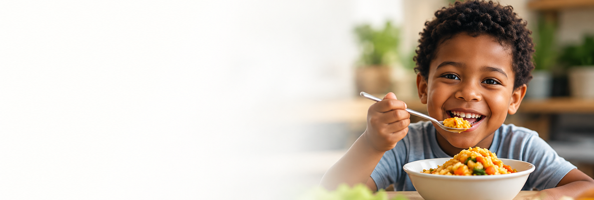
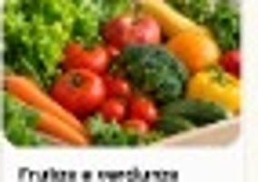
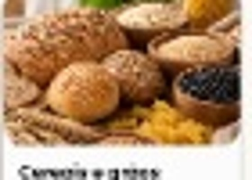
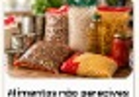
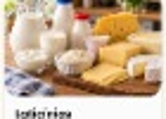
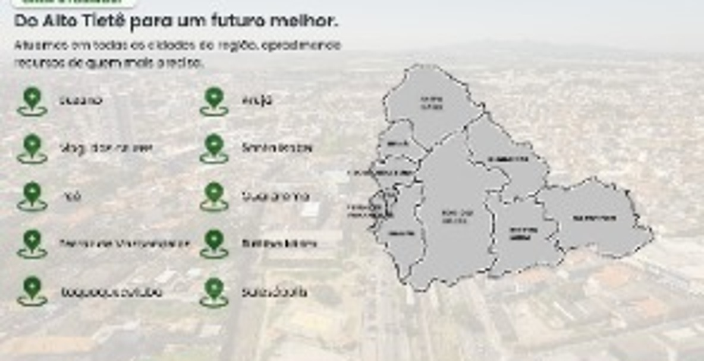
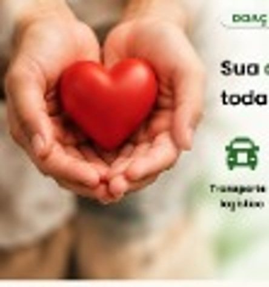
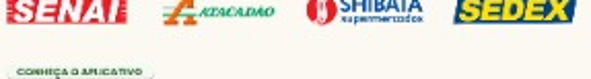
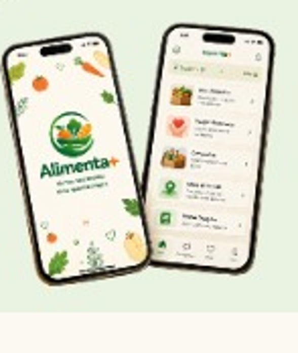

Aproveita alimentos
que ainda estão bons
ALTO TIETÊ
Menos desperdício.
Menos desperdício.
Mais Oportunidades.
O Alimenta+ é uma plataforma digital que organiza campanhas e ações de arrecadação de alimentos e recursos para ajudar pessoas e comunidades em situação de vulnerabilidade social no Alto Tietê.
Conheça o AppConecta pessoas,
empresas e comunidades
Mais eficiência
e transparência
Um Alto Tietê
mais justo
O PROBLEMA
Enquanto alimentos são desperdiçados,
18,9 milhõesde domicílios brasileiros
em algum grau de
insegurança alimentar
(IBGE, 2024)
13,2%dos alimentos são perdidos
globalmente após a produção
e antes do varejo
(FAO)
8% a 10%das emissões globais de gases
de efeito estufa estão associadas
às perdas e ao desperdício de alimentos
(FAO)
Enquanto alimentos são desperdiçados,
milhões de pessoas ainda passam fome.
Todos os dias, grandes quantidades de alimentos ainda próprios para consumo
são descartadas, enquanto muitas famílias enfrentam dificuldades para se alimentar.
em algum grau de
insegurança alimentar
(IBGE, 2024)
globalmente após a produção
e antes do varejo
(FAO)
de efeito estufa estão associadas
às perdas e ao desperdício de alimentos
(FAO)

SOBRE O PROJETO
Conheça o Alimenta+
Uma iniciativa que utiliza a tecnologia para combater o desperdício de alimentos e promover a segurança alimentar no Alto Tietê. Organizamos campanhas e ações próprias, conectando quem pode contribuir a quem mais precisa.
próprias
Alto Tietê
com a comunidade
e acompanhamento
COMO FUNCIONA?
1
2
3
4
Doar é simples e o impacto é real.
Cada etapa foi pensada para tornar a doação mais segura, organizada e transparente.
Para pessoas físicas
Encontre pontos e campanhas próximas, acompanhe oportunidades e faça parte de uma rede solidária.
Para empresas
Cadastre alimentos excedentes, informe quantidade e retirada e acompanhe o destino de cada doação.
CADASTROCrie sua conta
PUBLICAÇÃOInforme os alimentos
CONEXÃOUma instituição reserva
ACOMPANHEVeja o impacto gerado
O QUE PODE SER DESTINADO?
Diversos alimentos podem fazer a diferença.

Frutas e verduras
Cereais e grãos
Alimentos não perecíveis
Laticínios! Todos os alimentos devem estar dentro das condições de consumo e respeitar as normas sanitárias.

ONDE ATUAMOS?
Do Alto Tietê para um futuro melhor.
Atuamos em toda a região, aproximando recursos de quem mais precisa.
● Suzano● Mogi das Cruzes● Poá● Ferraz de Vasconcelos● Itaquaquecetuba
● Arujá● Santa Isabel● Guararema● Biritiba Mirim● Salesópolis

DOAÇÕES FINANCEIRAS
Sua contribuição movimenta
Sua contribuição movimenta
toda essa rede.
NOSSO IMPACTO
♻Reduzir
▲Ampliar o Acesso
♥Fortalecer
▥Gerar Mais
O impacto que queremos gerar.
Trabalhamos para um futuro com menos desperdício e mais oportunidades para todos.
O desperdício de alimentos.
A alimentos para quem mais precisa.
A solidariedade e a rede local.
Transparência e eficiência.
PARCERIAS
Juntos podemos ir mais longe.
Conectamos empresas, instituições e pessoas para construir uma rede cada vez maior.

CONHEÇA NOSSOS PARCEIROS
COMUNICAÇÃO
Acompanhe oportunidades, veja seus benefícios e receba informações úteis no próprio celular.
- ◼ Campanhas
- ✋ Doações
- ● Mapa de ações
- ▤ Histórico
- ◀ Notificações

NOSSA EQUIPE
IntegranteCoordenação do Site
IntegrantePesquisa e UX
IntegranteÁrea Comercial
IntegranteDesign e Conteúdo
IntegranteCC e Site Uno
Quem faz o Alimenta+ acontecer
Um time dedicado a transformar tecnologia em impacto social.